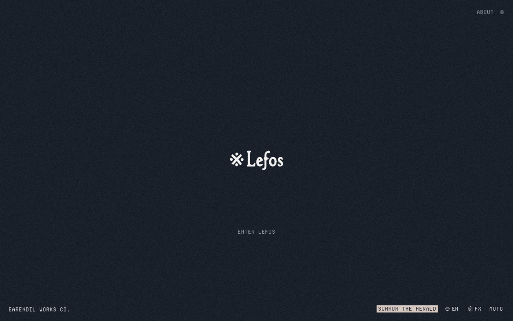
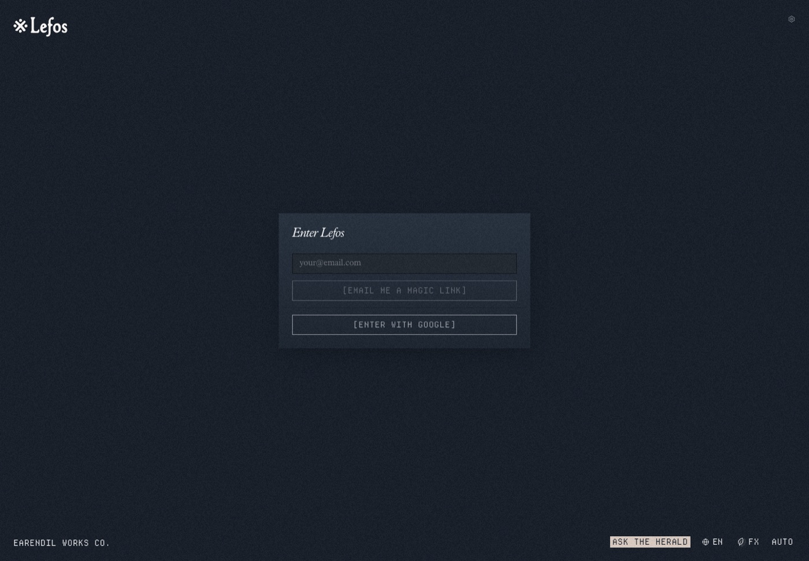
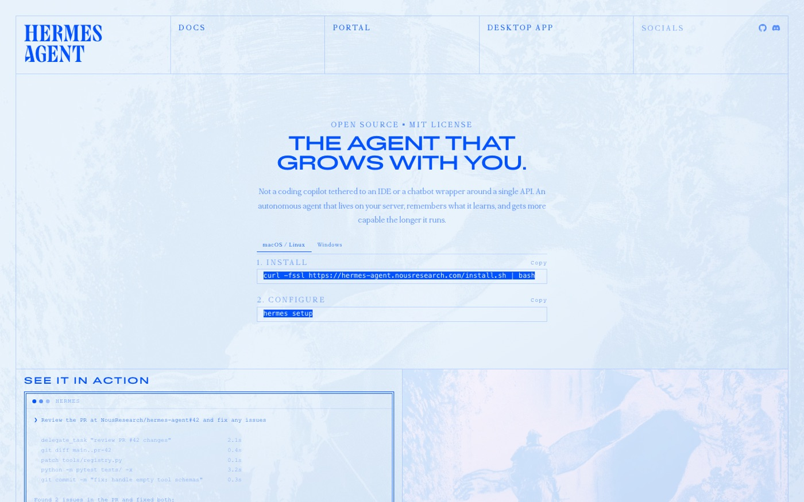
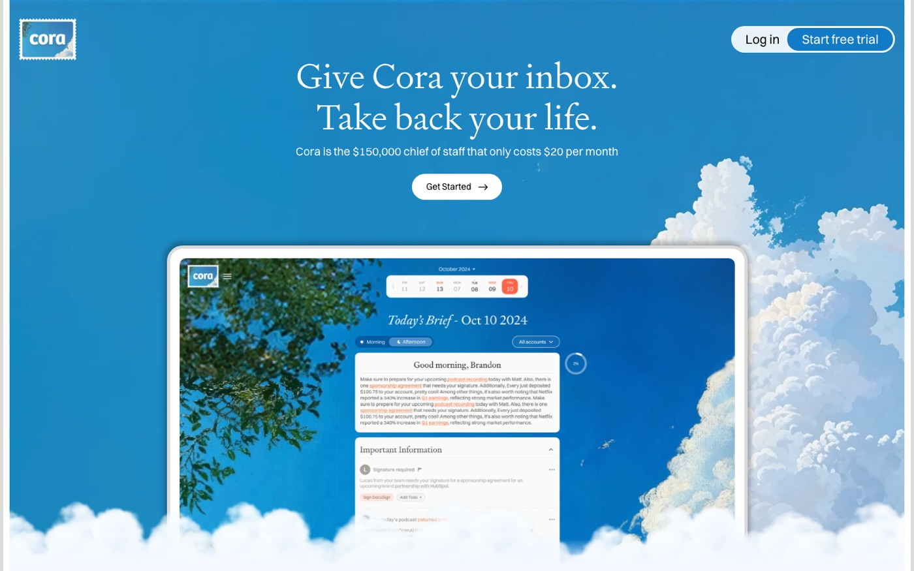
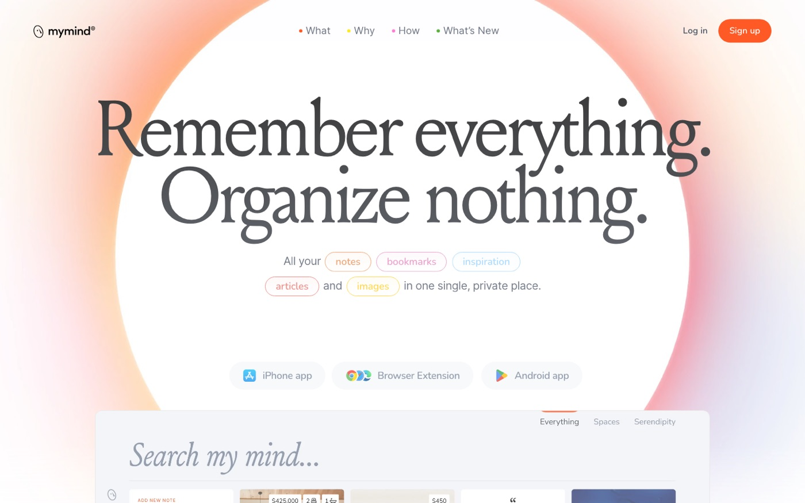
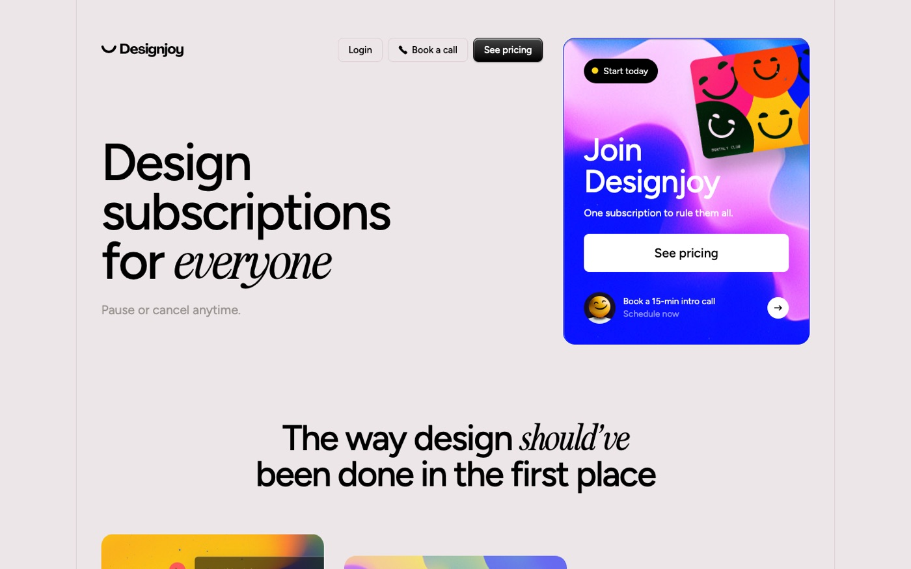
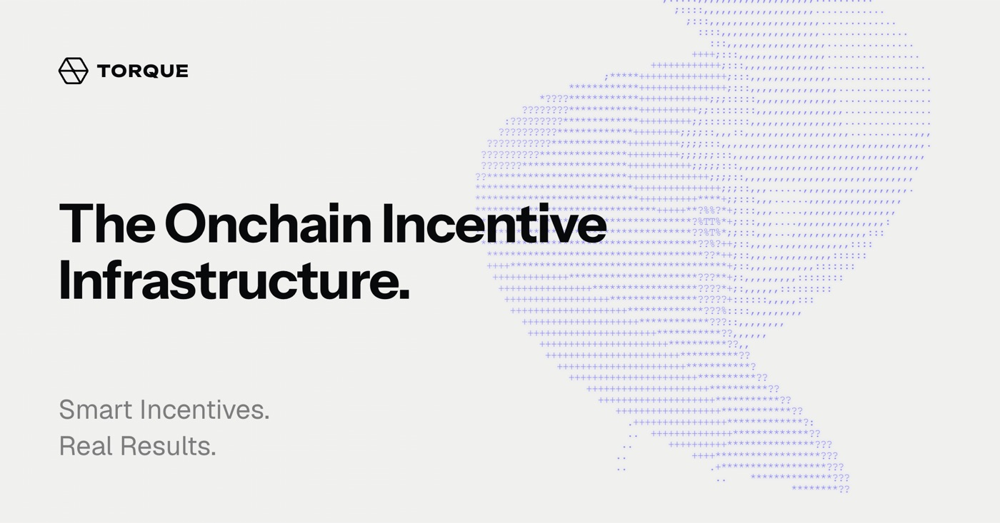

Taste is not a mood. It is a pattern you keep choosing before you can explain it. Below are the products you bookmarked, dissected with the seven lenses of this course, followed by the evidence from your own twenty research pages. The pattern is loud.
Unlike the plates in chapters 1–7, these are live products captured June 2026 — current work, shown because you chose it, not because it has survived. The screenshots are real, not AI.
Exhibit A — Lefos
A garden journal that behaves like an archive. Midnight blue that is never black, one serif voice (PlantinNow, mostly italic), one mono voice (DepartureMono), and every button label set in literal square brackets.

One focal point, acres of charged emptiness, grain instead of gloss. Chapter 1 and chapter 3 in one screen.

Serif speaks for the human, brackets speak for the system. Status colors are tints mixed into the background, never flat — Albers applied (chapter 4).
#161d27 midnight · #4b607c tidal accent · PlantinNow italic + DepartureMono · radius 0 on paper · 150ms cubic-bezier(.4,0,.2,1)
Enter Lefos
Lefos chrome, rebuilt live. Inspect the status block: the terracotta is color-mixed 18% into the midnight ground. The hue never appears flat — it is always a citizen of the page.
Exhibit B — Hermes Agent
Nous Research commits to one unforgettable decision: the entire product world is #0000F2. Giant light-weight serif caps (Sigurd, 132px, line-height 0.88) over Courier Prime labels. Chapter 4's single-accent rule, inverted: the accent became the ground.

Type is the entire interface — chapter 2's GOV.UK argument restated as fashion. Our headless capture caught its paper mode; the canonical surface is electric blue.
Open source · MIT license
The agent
that grows
with you.
/\—_=+|< -/= ~:*—/
Hermes Desktop hero, rebuilt live from its extracted tokens (#0000F2 ground, #F5F5F5 ink, #EDFF45 selection — try selecting the headline). Literata stands in for Sigurd; the structure is exact: mono eyebrow, stacked serif caps at 0.92 line-height, terminal ornament, one paper button.
#0000F2 everything · Sigurd 300 + Courier Prime · letter-spacing .1–.18em on mono · hover 200ms ease-out
Exhibits C & D — Cora and mymind

An email product that sells calm: sky ground, painterly clouds, a serif brief that reads like a letter. Chapter 6's lesson — the feel is the feature.

Two serif sentences carry the whole pitch; the glow is one soft radial accent on warm white. Hierarchy by subtraction (chapter 1).
cora: #1b8bc4 sky + serif headline · mymind: warm whites + #d5bab5 blush glow + italic serif accents
Exhibits E & F — Designjoy and Torque

The page is grayscale except one saturated card — the thing being sold. The entire color budget spent once (chapter 4); the squint test passes instantly (chapter 1).

Crypto infrastructure dressed in Swiss restraint: off-white #f0f0ee, Instrument Sans + Geist Mono, data drawn as periwinkle dot-matrix — ornament that is information (chapter 2's mono discipline).
torque: #f0f0ee ground · #0008FF accent · Instrument Sans display, Geist body, Geist Mono labels
Torque's live site refused to render in a headless browser — its official brand image and stylesheet tokens stand in. The dissection holds: the stylesheet names one accent and three text grays.
Your own evidence
Your twenty research explorations were audited for recurring moves. These are not preferences you aspire to — they are measurements of what you already do every time:
- serif display + sans/mono pairing20/20
- custom easing, never default20/20
- palette capped at 1–4 accents20/20
- paper or night ground, no grey midtone19/20
- multi-level ink hierarchy (3–4 shades)18/20
- hairline rules for structure18/20
- monospace eyebrows & labels15/20
- grain / noise / atmosphere layer8/20
Counted across research/pages/01–20 in your design-system repo, June 2026.
You don't need to find a style. You need to enforce the one your saves already prove.
In your systems
Name it and it becomes enforceable. On this evidence your aesthetic is archival editorial: a serif that speaks for the human, a mono that speaks for the machine, a ground that is paper or night but never grey, exactly one committed accent, one layer of weather (grain, leaves, blend), and motion that settles like the W123 door. Every site you saved keeps those six rules; so do racing-green, calm-ink, and neo-tactile. The question for foldwell and aperture: which of the six are they breaking, and is it on purpose?
Write your six rules on a card in your own words. Then open the last screen you shipped and delete or correct exactly one thing that breaks a rule. Repeat on every ship until the card is boring. That boredom has a name: identity.
Vocabulary
- Taste fingerprint — the moves you repeat unprompted; measured, not declared.
- Borrowed light — Lefos' discipline of mixing status hues into the ground color instead of placing them flat (Albers, Interaction of Color, 1963).
- Type as protagonist — hierarchy and brand carried by typefaces, not chrome (Reichenstein, 2006; GOV.UK, 2012).
- Constraint card — a written rule set short enough to refuse with (Rams' ten principles; Vignelli Canon, 2010).
Captures and token extractions: June 2026 · Lefos, Hermes Agent, Cora, mymind, Designjoy, Torque · your research pages 01–20.